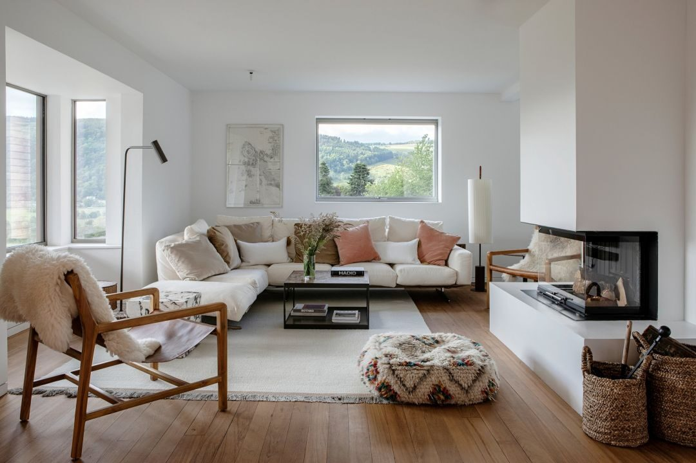

There is no road to Kilchoan Estate. No motorway exit, no signpost on the A87, no gravel track winding conveniently off a B-road. To reach this thirteen-thousand-acre property on the Knoydart Peninsula — the last great wilderness on mainland Britain — you either take the ferry from Mallaig or you walk sixteen miles over mountain passes. There is no third option. That is, quite precisely, the point.
Knoydart sits on Scotland’s west coast like a secret the Highlands have been keeping from the rest of the country. A rugged peninsula bounded by Loch Nevis to the south and Loch Hourn to the north, it is home to fewer than a hundred permanent residents, one pub, one community-owned renewables operation, and a silence so complete it registers as a physical presence. The mountains — Ladhar Bheinn, Luinne Bheinn, Meall Buidhe — rise sharp and treeless from the water, their ridgelines softened by cloud for most of the year. When the mist lifts, the views run west across the Sea of the Hebrides to the Small Isles: Rum, Eigg, Muck, Canna. On clear evenings the light holds until nearly eleven, the sky cycling through shades of pewter and rose that no photograph has ever accurately captured.
It is into this landscape that Christoph and Katrin Henkel have spent the better part of a decade quietly building something extraordinary. Kilchoan Estate opens in June 2026 — not as a hotel, exactly, nor a resort, nor any of the other familiar categories that the luxury hospitality industry tends to reach for. It is, instead, a rewilding project that happens to have some of the most considered accommodation in Scotland.
The land: a man-made eco disaster in recovery
The Henkels acquired Kilchoan’s thirteen thousand acres with a thesis that is equal parts environmental conviction and long-term thinking. Centuries of overgrazing and the Victorian fashion for sporting estates had stripped Knoydart of its native woodland, leaving hillsides of bracken and heather where Caledonian pine, birch, rowan and oak once grew. The deer population, unchecked by natural predation, had ballooned. The land, for all its beauty, was degraded.
“This is a man-made eco disaster in recovery,” is how the estate describes itself — a sentence you will not find in many luxury brochures. The Henkels have replanted five hundred and fifty-five acres of native trees, restored historic bridle paths across the peninsula, and implemented a programme of selective deer management designed to bring numbers back to levels the land can sustain. The rewilding is not cosmetic. It is the organising principle of everything that happens here.
We don’t think of ourselves as owners of this land. We are its stewards for a generation, and our job is to leave it in better condition than we found it.
Christoph Henkel, Kilchoan EstateThe estate is the primary customer of Knoydart Renewables, the community-owned hydro scheme that powers the peninsula. Kilchoan operates entirely free of fossil fuels — a claim that is easier to make in a place where the grid connection was never an option, but no less impressive for the engineering it requires. Heat pumps, biomass, and the peninsula’s abundant rainfall do the work that gas boilers do elsewhere.
The rooms: Rum, Eigg, Canna
Accommodation, at launch, comprises three two-bedroom cottages — named Rum, Eigg and Canna after the islands visible from their windows — and a five-bedroom Farmhouse for larger parties. The cottages are bothy-inspired in form: low-slung, stone-clad, designed to sit within the landscape rather than impose upon it. More lodges are planned for later phases, but the Henkels are building slowly, deliberately, letting the land set the pace.
The interiors are by Waldo Works, the London studio whose portfolio runs from The Ned to Claridge’s ArtSpace. Here, Tom Bartlett and his team have calibrated every surface to the specific conditions of Knoydart — the quality of the light, the texture of the stone, the way rain sounds on a slate roof at three in the afternoon. Italian Flexform sofas are upholstered in Bute tweed from the Isle of Bute. Ceramic lamps by Adam Ross sit on surfaces beside textiles woven at Selkirk’s mill in the Borders. Syng triphonic speakers — designed by the team behind the original HomePod — fill each room with spatial audio that feels less like technology and more like weather.

Waldo Works interiors at Kilchoan — Flexform, Adam Ross ceramics, Bute tweed. Photography courtesy of The Aficionados
Katrin Henkel, a former art dealer, has curated a collection of one hundred and fifty works across the estate — contemporary pieces that respond to the landscape without illustrating it. The art is not decoration. It is an argument for paying attention.
Rates begin at £1,100 per night, fully inclusive. Given what is included — the setting, the design, the food, the activities, the sheer improbability of the place — this feels less like a price and more like a statement of intent about the kind of guest Kilchoan is designed for: one who values difficulty of access as a feature, not a flaw.
The days: stalking, fishing, silence
There is no shortage of things to do at Kilchoan, though doing nothing is treated as an equally valid pursuit. Guided stalking is available for guests who pass a range qualification — the estate takes its deer management seriously, and every outing is framed as conservation rather than sport. Brown trout and Atlantic salmon fishing can be arranged on the estate’s lochs and rivers, with rods and guidance provided. E-bike tours follow the restored bridle paths across the peninsula, and boat trips run to the puffin colonies on the Isle of Canna, where several thousand breeding pairs nest each summer in burrows above the basalt cliffs.
A spa programme includes a yoga studio, fitness facilities, massage rooms, a wood-fired sauna and a cold plunge that draws its water from a Highland burn — which is to say, the cold plunge is genuinely cold, in a way that the plunge pools of London wellness clubs can only approximate. Hiking, of course, is the primary activity: the Munro of Ladhar Bheinn rises directly from the estate, and the views from its summit ridge — west to Skye, south to the Ardnamurchan peninsula, north to Torridon — are among the finest on the Scottish mainland.
The table: venison, IPA, the Old Forge
Each cottage comes with a fully equipped kitchen, stocked on arrival with provisions that read like an inventory of Knoydart itself: venison jerky from the estate’s own deer management programme, cheeses from Highland creameries, IPA from Knoydart Brewery — a microbrewery operated by the community in the nearby settlement of Inverie. The intention is that guests cook for themselves, at least some of the time, using ingredients whose provenance is measurable in yards rather than food miles.
For evenings when the kitchen feels like too much effort, the estate has a partnership with the Old Forge in Inverie — certified by the Guinness Book of Records as the most remote pub on mainland Britain. A boat transfer delivers guests to a menu of local seafood, estate game and whatever the kitchen has decided to do that day. A communal Long House dining space is under construction on the estate itself, designed for the kind of convivial, long-table suppers that Scottish hospitality does better than almost anyone.
What Kilchoan represents is not simply another entry in the expanding category of luxury rewilding retreats. It is a proposition about what hospitality looks like when the landscape comes first — when the difficulty of arrival is understood as a threshold, not an inconvenience, and when the silence that greets you on the other side is treated as the most valuable amenity of all. The Henkels have built something that feels less like a hotel and more like an act of faith: in the land, in the weather, in the idea that thirteen thousand acres of quiet might be exactly what a certain kind of traveller has been looking for.
The ferry from Mallaig takes forty-five minutes. The walk takes two days. Either way, you arrive somewhere that the rest of Scotland cannot quite reach. That, in the end, is the luxury.